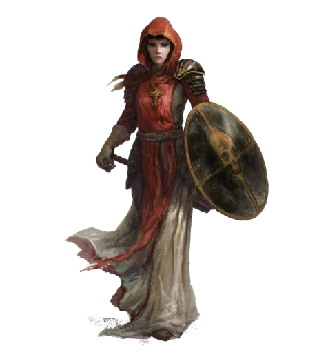
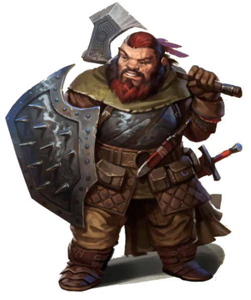
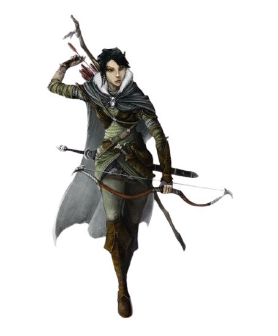
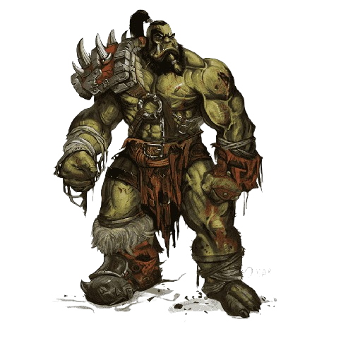

|  |
Les Humains
Dans la plupart des mondes, les humains sont la plus jeune des races communes,
la dernière à être apparue et celle dotée de la plus faible longévité par rapport aux nains,
aux elfes et aux dragons. Peut-être du fait de leurs vies plus courtes, ils s'efforcent d'atteindre
autant d'objectifs qu'ils peuvent pendant les années qui leur sont données. Ou peut-être sentent-ils
qu'ils ont quelque chose à prouver aux races plus anciennes, et c'est pourquoi ils construisent de puissants
empires basés sur la conquête et le commerce. Mais quelle que soit la raison qui les pousse de l'avant
, les humains sont les innovateurs, les bâtisseurs et les pionniers de leurs mondes.
|
- Augmentation de caractéristiques. Toutes vos caractéristiques augmentent de 1.
- Âge. Les humains atteignent l'âge adulte peu avant 20 ans et vivent moins d'un siècle.
- Taille. Les humains ont des tailles et des complexions très variables, pouvant mesurer depuis 1,55 mètre jusqu'à bien plus de 1,85 mètre. Quelle que soit votre taille à l'intérieur de cette plage, votre taille est Moyenne (M).
- Vitesse. Votre vitesse de base est de 9 mètres.
- Langues. Vous pouvez parler, lire et écrire le commun et une langue supplémentaire de votre choix. Les humains apprennent généralement les langues des peuples avec lesquels ils traitent, y compris les dialectes obscurs. Ils sont friands de saupoudrer leur discours avec des mots empruntés à d'autres langues comme les malédictions orcs, les expressions musicales elfiques, les expressions militaires naines, et ainsi de suite.
|
- Calishite
- Chondathien
- Damarien
- Illuskien
- Mulien
- Rashémi
- Shou
- Téthyrien
- Turami
|
|  |
Les Nains
De riches royaumes d’une ancienne magnificence, des halls creusés aux racines mêmes des montagnes, l’écho des pioches et des marteaux dans les mines profondes et les forges ardentes, un engagement au clan et à la tradition ainsi qu’une intense haine des gobelins et des orcs, ce sont les traits communs qui unissent tous les nains. |
- Augmentation de caractéristiques. Votre Constitution augmente de 2.
- Âge. Les nains vieillissent au même rythme que les humains, mais sont considérés comme jeunes jusqu'à ce qu'ils atteignent l'âge de 50 ans. En moyenne, ils vivent environ 350 ans.
- Taille. Les nains mesurent entre 1,20 m et 1,50 m pour un poids aux alentours de 70 kg. Votre taille est Moyenne (M).
- Vitesse. Votre vitesse de base est de 7,50 mètres. Votre vitesse n'est pas réduite par le port d'une armure lourde.
- Vision dans le noir. Habitué à la vie souterraine, vous avez une vision supérieure dans l'obscurité et la lumière faible. Vous pouvez voir à 18 mètres dans une zone de lumière faible comme vous verriez avec une lumière vive, et dans le noir comme vous verriez avec une lumière faible. Dans le noir, vous ne discernez pas les couleurs, uniquement des nuances de gris.
- Résistance naine. Vous avez un avantage aux jets de sauvegarde contre le poison et obtenez la résistance contre les dégâts de poison.
- Entraînement aux armes naines. Vous obtenez la maîtrise des hachettes, des haches d'armes, des marteaux légers et des marteaux de guerre.
- Maîtrise des outils. Vous obtenez la maîtrise d'un des outils d'artisan suivant au choix : outils de forgeron, outils de brasseur ou outils de maçon.
- Connaissance de la pierre. Chaque fois que vous effectuez un jet d'Intelligence (Histoire) en relation avec l'origine d'un travail lié à la pierre, considérez que vous maîtrisez la compétence Histoire et ajoutez le double de votre bonus de maîtrise au jet, au lieu du bonus de maîtrise normal.
- Langues. Vous parlez, lisez et écrivez le commun et le nain. La langue naine comporte de nombreuses consonnes dures et sons gutturaux, et ces caractéristiques se retrouvent lorsqu'un nain parle une autre langue.
|
- Nain des Plaines
- Nain des montagnes
|
|  |
Les Elfes
Les elfes sont des créatures magiques d’une extraordinaire grâce, habitant le monde sans en faire totalement partie. Ils vivent dans des lieux d’une beauté éthérée, au cœur d’anciennes forêts ou dans des tours scintillantes d’une lumière féerique, là où une douce musique flotte dans l’air et où de subtils effluves embaument la brise. Les elfes aiment la nature et la magie, l’art et l’artisanat, la musique et la poésie, et les bonnes choses de ce monde. |
- Augmentation de caractéristiques. Votre Dextérité augmente de 2.
- Âge. Bien que les elfes atteignent la maturité physique à peu près au même âge que les humains, pour les elfes la définition de l'âge adulte dépend plus de l'expérience que l'on peut avoir du monde que de la croissance physique. Un elfe prétend généralement à l'âge adulte et à un nom d'adulte aux alentours de ses 100 ans et peut vivre jusqu'à 750 ans.
- Taille. Les elfes mesurent entre 1,50 m et 1,80 m et sont élancés. Votre taille est Moyenne (M).
- Vitesse. Votre vitesse de base est de 9 mètres.
- Vision dans le noir. Vous pouvez voir à 18 mètres dans une lumière faible comme vous verriez avec une lumière vive, et dans le noir comme vous verriez avec une lumière faible. Dans le noir, vous ne discernez pas les couleurs, uniquement des nuances de gris.
- Sens aiguisés. Vous maîtrisez la compétence Perception.
- Ascendance féerique. Vous avez un avantage aux jets de sauvegarde contre les effets de charme et la magie ne peut pas vous endormir.
- Transe. Les elfes n'ont pas besoin de dormir. Au lieu de cela, ils méditent profondément, restant à demi conscients, 4 heures par jour (le mot commun pour désigner cette méditation est « transe »). En méditant, vous pouvez rêver, tant bien que mal ; ces rêves sont en fait des exercices mentaux qui deviennent un réflexe après des années de pratique. Après un repos de ce type, vous obtenez les mêmes avantages qu'un humain après 8 heures de sommeil.
- Langues. Vous pouvez parler, lire et écrire le commun et l'elfique. L'elfique est fluide, possède de subtiles intonations et une grammaire complexe. La littérature elfe est riche et variée, et leurs chansons et poèmes sont célèbres parmi les autres races. Beaucoup de bardes apprennent cette langue afin de pouvoir ajouter des ballades elfiques à leur répertoire.
- Sous-race. D'anciens clivages du peuple elfique ont abouti à trois sous-races principales : les haut-elfes, les elfes des bois et les elfes noirs, plus communément appelés drows. Dans certains mondes, ces sous-races sont elles-mêmes subdivisées (comme les elfes solaires et les elfes lunaires des Royaumes Oubliés), et vous pouvez si vous le souhaitez choisir une de ces subdivisions.
|
- Haut-elfes
- Elfes des bois
- Elfes noirs
|
|  |
Les Demi-orcs
Que ce soit unis sous la direction d'un puissant occultiste ou lors de trêves après des
années de conflit, les tribus orcs et humaines forment parfois des alliances, unissant
leurs forces en une horde encore plus grande qui engendre la terreur dans les terres civilisées
proches. Et lorsque ces alliances sont scellées par des mariages, des demi-orcs naissent. Certains
deviennent de fiers chefs de tribus orcs, leur sang humain leur donnant un avantage sur leurs
rivaux orcs. Certains s'aventurent dans le monde afin de prouver leur valeur parmi les humains ou
d'autres races plus civilisées. Beaucoup d'entre eux deviennent alors des aventuriers, acquérant
la grandeur à travers leurs hauts faits et la notoriété à travers leurs coutumes barbares et leur
fureur sauvage.
|
- Augmentation de caractéristiques. Votre Force augmente de 2 et votre Constitution augmente de 1.
- Âge. Les demi-orcs deviennent matures un peu plus vite que les humains, atteignant l'âge adulte aux environs de 14 ans. Ils vieillissent sensiblement plus rapidement et vivent rarement plus de 75 ans.
- Taille. Les demi-orcs sont un peu plus grands et trapus que les humains et mesurent de 1,55 à bien plus de 1,85 mètre. Votre taille est Moyenne (M).
- Vitesse. Votre vitesse de base est de 9 mètres.
- Vision dans le noir. Grâce à votre sang orc, vous avez une vision supérieure dans le noir et les conditions de faible éclairage. Vous pouvez voir à 18 mètres dans une lumière faible comme vous verriez avec une lumière vive, et dans le noir comme vous verriez avec une lumière faible. Dans le noir, vous ne discernez pas les couleurs, uniquement des nuances de gris.
- Menaçant. Vous gagnez la maîtrise de la compétence Intimidation.
- Endurance implacable. Lorsque vous tombez à 0 point de vie, mais que vous n'êtes pas tué sur le coup, vous pouvez passer à 1 point de vie à la place. Vous devez terminer un repos long avant de pouvoir utiliser cette capacité de nouveau.
- Attaques sauvages. Lorsque vous réalisez un coup critique lors d'une attaque au corps à corps avec une arme, vous pouvez lancer l'un des dés de dégâts de l'arme une deuxième fois et l'ajouter aux dégâts supplémentaires du coup critique.
- Langues. Vous pouvez parler, lire et écrire le commun et l'orc. L'orc est une langue rude et grinçante qui utilise beaucoup de consonnes dures. Elle ne possède pas d'alphabet propre, et lorsque quelqu'un veut écrire quelque chose en orc, il utilise l'alphabet nain.
|
|